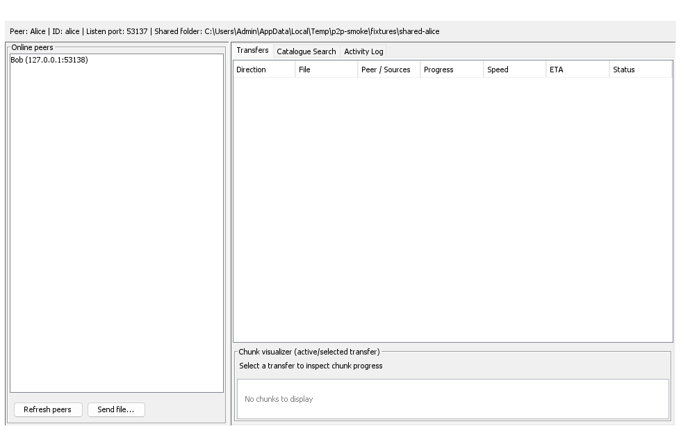
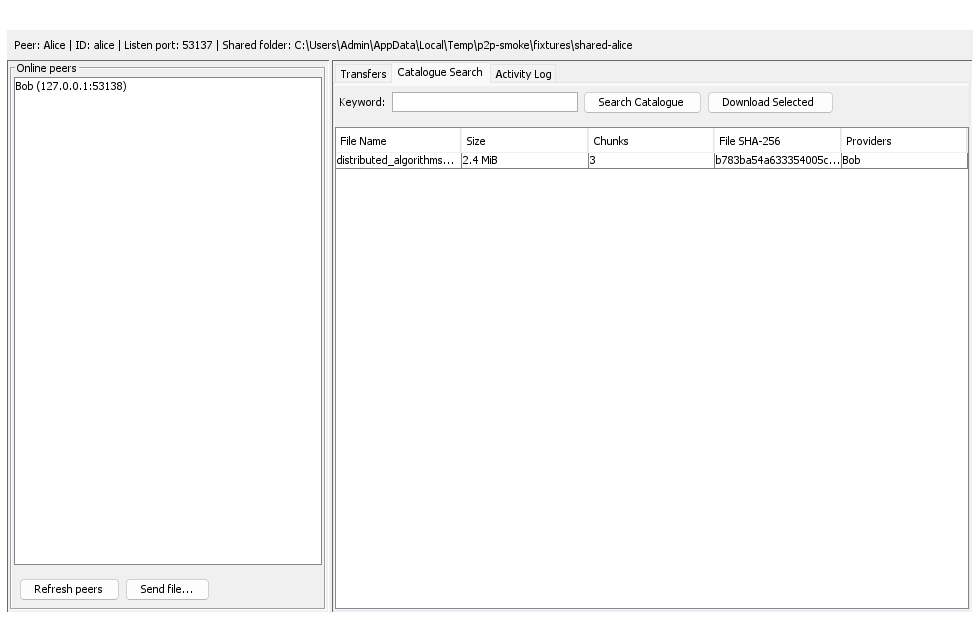
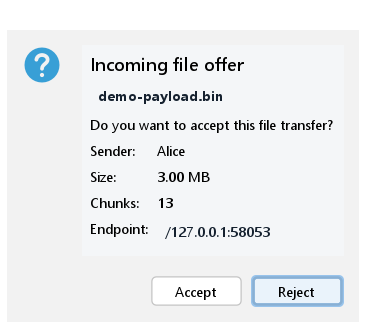
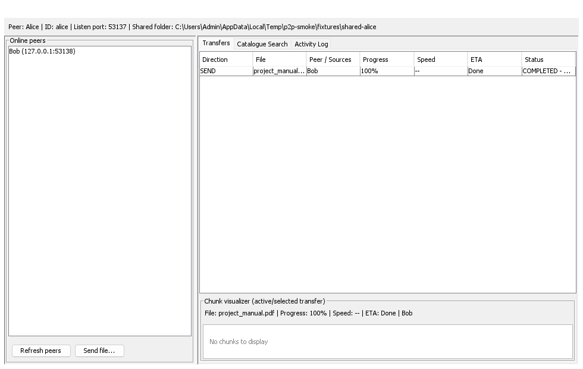
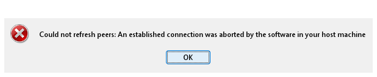

Application startup and discovery

Alice window after startup and tracker registration, with Bob listed in Online peers.
Each peer runs the same desktop application and can send or receive. The window shows identity, discoverable peers, and one row per transfer session.
Peer: Alice | ID: peer-a | Listen port: 6001
Online peers: Bob (…:6002)
Actions: [Refresh peers] [Send file…]
Transfers: Direction | File | Peer | Progress | Speed | StatusSchematic based on MainFrame; not a runtime screenshot.

Alice window after startup and tracker registration, with Bob listed in Online peers.

Search tab listing matching published files with file size, chunk size, chunk count, and online provider peers.

Receiver confirmation dialog showing file name, human-readable size, chunk count, and sender address.

Alice window showing verified direct transfer with exact byte count and COMPLETED status.

Error dialog and cleared peer list when tracker connection is lost.
| Surface | What it does |
|---|---|
| Identity line | Shows configured display name, peer ID, and listening port. |
| Refresh peers | Requests a fresh tracker list in a background SwingWorker; there is no automatic polling. |
| Send file… | Requires one selected peer, opens the native file chooser, and starts a background send. |
| Incoming dialog | Shows sender, filename, size, chunk count, and socket address; auto-accept can bypass it. |
| Transfer table | Shows direction, file, peer, integer progress, average MiB/s, state, and message. |
PREPARING while hashing.COMPLETED, no .part suffix, and matching SHA-256.REJECTED and no completed file appears.“The tracker is a directory, not a relay. It returns peer addresses. Alice then creates a separate TCP connection directly to Bob. Bob verifies every chunk before acknowledging it and exposes the final file only after its complete SHA-256 matches.”